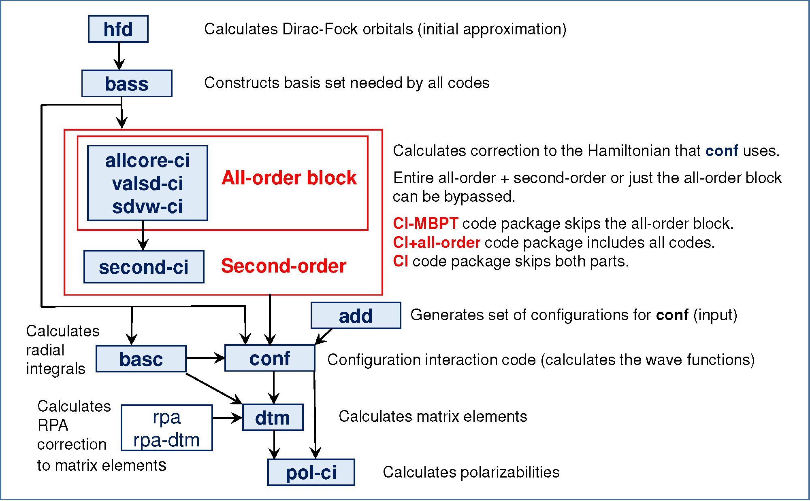

Overview of the pCI code package
 Figure. pCI code scheme
hfd - hartree-fock-dirac
The hfd program solves restricted Hartree-Fock-Dirac (HFD) equations self-consistently under the central field approximation to find four-component Dirac-Fock (DF) orbitals and eigenvalues of the HFD Hamiltonian. The program provides the initial approximation, storing both basis radial orbitals
as well as the radial derivatives of the orbitals , to the file HFD.DAT.
bass - constructing the basis set
The bass program forms the DF orbitals for the core and valence shells, then adds virtual orbitals to account for correlations. A reasonable basis set should consist of orbitals mainly localized at the same distances from the origin as the valence orbitals.
add - creating the configuration list
The add program constructs a list of configurations to define the CI space by exciting electrons from a set of reference configurations to a set of active non-relativistic shells. It takes in the input file ADD.INP, which specifies the reference configurations, active non-relativistic shells, and minimum and maximum occupation numbers of each shell. It writes the file CONF.INP, which includes a list of user-defined parameters and the list of configurations constructed by exciting electrons from a list of basic configurations.
The following is a sample input ADD.INP file. Each line has a description of the respective variable. The third block starting with 4f 9 14 is a list of the orbitals and minimum and maximum occupation numbers. For example, 4f 9 14 refers to having a minimum of 9 electrons or a maximum of 14 electrons for the 4f orbital.
Ncor= 4 !# number of basic configurations. Must match the list below.
NsvNR 16 !# number of active NR shells. The list below may be longer.
mult= 2 !# multiplicity of excitations. For full CI use mult=Ne
NE = 14 !# number of valence electrons
L: 4f14 !# list of basic configurations
L: 4f13 5p1 !# from which electrons are excited from.
L: 4f12 5s2 !# the number of configurations listed here
L: 4f11 5s2 5p1 !# must match the number on the first line 'Ncor= 4'
## nnlee nnlee nnlee !# formatting of configurations
!# the numbers nn refer to the principal quantum number
!# the letters l refer to the angular momentum quantum number
!# the numbers ee refer to the occupation of that orbital
4f 9 14 5s 0 2 5p 0 3 5d 0 2 5f 0 2 5g 0 2
6s 0 2 6p 0 2 6d 0 2 6f 0 2 6g 0 2 7s 0 2
7p 0 2 7d 0 2 7f 0 2 7g 0 2
##nnl ee ee nnl ee ee nnl ee ee nnl ee ee nnl ee ee nnl ee ee
>>>>>>>>>>>>> Head of the file CONF.INP >>>>>>>>>>>>>>>>>>>>>>>>
Ir17+_even # ion_parity
Z = 77.0 # atomic number
Am = 192.0 # atomic weight
J = 4.0 # total angular momentum
Jm = 4.0 # angular momentum projection
Nso= 14 # number of closed core shells
Nc = 10 # number of relativistic configurations (ignored in add program)
Kv = 4 # Kv = (3 - use projections, 4 - no projections)
Nlv= 5 # number of energy levels
Ne = 14 # number of valence electrons
Kl4= 1 # Kl4 = (1 - initial approx. from energy matrix, 2 - initial approx. from CONF.XIJ file)
Nc4= 20 # number of relativistic configurations in initial approximation
Gj = 0.0000 #
Crt4= 0.0001 # cutoff criteria for davidson convergence
kout= 0 # key for level of output (0 - low detail output, 1 - detailed output)
Ncpt= 0 # number of relativistic configurations in PT block (ignored in add program)
Cut0= 0.0001 # cutoff criteria for weights of PT configurations
N_it= 100 # number of davidson iterations
Kbrt= 1 # key for Breit (0 - Coulomb, 1 - Gaunt, 2 - Full Breit)
Gnuc= 1.07 # gyromagnetic ratio
0.1002 0.2002 -0.2102 0.2104 0.3002 -0.3102
0.3104 -0.3204 0.3206 0.4002 -0.4102 0.4104
-0.4204 0.4206
==================================================================
Note
The second block listing the basic configurations has a specific formatting __nnlee__, where __ indicate spaces, nn is the principal quantum number, l is the angular momentum quantum number as a letter (s=0, l=1, d=2, ...), and ee is the number of electrons in that orbital.
Note
The order in which the configurations and basis orbitals must be listed identically with those from BASS.INP.
basc - calculating radial integrals
After the configuration list has been created, the next step is to calculate the radial integrals using the program basc. basc calculates one-electron and two-electron radial integrals, which are used by the conf program to form the Hamiltonian in the CI space. The one-electron radial integrals correspond to the DF potential of the core, and the two-electron radial integrals account for the Coulomb and Breit interactions between the valence electrons. The matrix elements of the Coulomb interaction for the multipolarity can be written as
where the angular factors (known as relativistic Gaunt coefficients) are given by
and are the relativistic Coulomb radial integrals, and accounts for the parity selection rule
The Breit interaction has the same form as the Coulomb interaction, but without the parity selection rule.
The basc reads in the files HFD.DAT and CONF.INP to determine which radial integrals are needed. These integrals are calculated and written to the files CONF.INT. The relativistic Gaunt coefficients are written to the file CONF.GNT, and the file CONF.DAT is also formed, storing the basis radial orbitals , as well as functions .
conf - configuration interaction
In this section, we will introduce how to run the CI program conf.
Here is a summary of the input and output files used in conf.
Input Files:
HFD.DAT- basis set radial orbitals and radial derivatives of the orbitalsCONF.DAT- basis set radial orbitals and functions , where is the radial part of the Dirac-Fock operatorCONF.GNT- relativistic Gaunt coefficients produced bybascCONF.INT- relativistic Coulomb coefficients produced bybascSGC.CON(optional) - one-electron effective radial integrals of the MBPT/all-order correctionsSCRC.CON(optional) - two-electron effective radial integrals of the MBPT/all-order correctionsCONF.INP- list of relativistic configurations and user defined parametersc.in- input file with keysKl,Ksig, andKdsigKl= (0 - start, 1 - continue calculation, 2 - include corrections, 3 - add configurations)Ksig= (0 - pure CI, 1 - include one-electron corrections, 2 - include one- and two-electron corrections)Kdsig= (0 - no energy dependence on Sigma, 1 - energy dependence on Sigma)
Output Files:
CONF.DET- basis set of determinantsCONF.HIJ- indices and values of the Hamiltonian matrix elementsCONF.JJJ- indices and values of the matrix elements of the operatorCONF.XIJ- quantum numbers, eigenvalues and eigenvectors of the HamiltonianCONF.RES- final table of energy eigenvalues and the weights of all configurations contributing to each term
The following is a sample of the head of a CONF.INP for calculating the even-parity states of Ir.
Ir17+_even # ion_parity
Z = 77.0 # atomic number
Am =193.0 # atomic weight
J = 2.0 # total angular momentum
Jm = 2.0 # angular momentum projection
Nso= 14 # number of closed core shells
Nc = 481 # number of relativistic configurations
Kv = 4 # Kv = (3 - use projections, 4 - no projections)
Nlv= 5 # number of energy levels
Ne = 14 # number of valence electrons
Kl4= 1 # Kl4 = (1 - initial approx. from energy matrix, 2 - initial approx. from CONF.XIJ file)
Nc4= 28 # number of relativistic configurations in initial approximation
Gj = 0.0000 #
Crt4= 0.0001 # cutoff criteria for davidson convergence
kout= 0 # key for level of output (0 - low detail output, 1 - detailed output)
Ncpt= 1132 # number of relativistic configurations in PT block (used in conf_pt)
Cut0= 0.0001 # cutoff criteria for davidson convergence
N_it= 100 # number of davidson iterations
Kbrt= 1 # key for Breit (0 - Coulomb, 1 - Gaunt, 2 - Full Breit)
Gnuc= 1.07 # gyromagnetic ratio
0.1002 0.2002 -0.2102 0.2104 0.3002 -0.3102
0.3104 -0.3204 0.3206 0.4002 -0.4102 0.4104
-0.4204 0.4206
1
1-0.4306 0.4308
2
2-0.4306 0.4306 0.5002
3-0.4305 0.4307 0.5002
4-0.4304 0.4308 0.5002
3
5-0.4305 0.4308 -0.5101
6-0.4305 0.4308 0.5101
7-0.4306 0.4307 -0.5101
8-0.4306 0.4307 0.5101
:
Note
The first 5 columns up to the '=' sign are fixed, and the program will give an error if there are any discrepancies here.
Note
The list of core shells are fixed to have a maximum of 6 shells per row.
In the CONF.INP file shown above, we include 481 relativistic configurations in the CI space, and 1132 relativistic configurations in the PT space (if conf_pt is to be used after conf).
dtm - density transition matrix
The dtm program calculates matrix elements of one-electron operators between many-electron states, under the density (or transition) matrix formalism. This formalism allows us to express the matrix elements between many-electron states via one-electron matrix elements. The dtm program forms these reduced density (or transition) matrices and calculates the reduced matrix elements. The following quantities can be calculated from this program:
- electron g-factors
- magnetic dipole and electronic quadrupole hyperfine structure constants and
- electric () and magnetic () multipole transition amplitudes, where corresponds to the dipole, quadrupole, and octupole transitions
- nuclear spin independent parity nonconserving (PNC) amplitude
- amplitude of the electron interaction with the P-odd nuclear anapole moment (AM)
- P, T-odd interaction of the dipole electric dipole moment
- nucleus magnetic quadrupole moment
This program begins by reading the file CONF.INP for system parameters and the list of configurations. Next, basis radial orbitals are read from the file CONF.DAT, and radial integrals for all operators are calculated and written to the file DTM.INT. If this file already exists, dtm uses it and does not recalculate the radial integrals.
For the diagonal matrix elements, the list of determinants and eigenvectors corresponding to the state of interest are read from the files CONF.DET and CONF.XIJ, respectively. For the non-diagonal matrix elements, the initial state is read from the file CONF.DET and CONF.XIJ, and the final state is read from the files CONF1.DET and CONF1.XIJ. The results of the diagonal and non-diagonal matrix elements are written to the files DM.RES and TM.RES, respectively.
dtm takes in as input the input file dtm.in:
2 # 1 for DM (as g-factor or hyperfine), 2 for transitions
1 1 12 # from 1st even level to 1st-12th odd levels
Note
Some -coefficients might be zero in some cases, such as trying to compute matrix element for . This will fail if the odd run had , . You would need to have an odd run with ,
ine - polarizabilities
The ine program calculates static and dynamic polarizabilities of specified atomic levels. ine only gives the valence polarizability. Core polarizability needs to be computed separately with a different code. The code will give both scalar and tensor polarizabilities if the tensor polarizability is not zero, but not the vector polarizability. There are several version of the code, but for now we will use ine_dyn_E28. This program requires several input files from previously ran conf and dtm programs, including CONF.DET and CONF.XIJ of the parity of the level of interest (renamed to CONF0.DET and CONF0.XIJ), CONF.INP, CONF.XIJ, CONF.HIJ, and CONF.JJJ of the opposite parity, and the file DTM.INT from dtm.
For example, if we want to calculate polarizabilities for an even state:
cp CONFeven.DET CONF0.DET
cp CONFeven.XIJ CONF0.XIJ
cp CONFodd.INP CONF.INP
cp CONFodd.XIJ CONF.XIJ
cp CONFodd.HIJ CONF.HIJ
cp CONFodd.JJJ CONF.JJJ
ine_dyn_E28 can either solve the inhomogeneous equation iteratively by solving for a smaller matrix first, or by direct matrix inversion via the LAPACK library. It is controlled by the parameter IP1 in conf.par:
PARAMETER(IP1 = 15000, ! Nd1 - number of determinants for direct diagonalization
This parameter can be set to be larger than the number of determinants in your problem if you don't want the program to iterate at all. The problem with iterations is that they diverge in many cases for dynamic polarizabilities. However, the problem with the direct solution is that it takes a long time to run (about 20-30 min even for 10, 000 determinants).
The program can be executed via the command:
./ine_dyn_E28 <inf.dtm
Click here to see a description of inf.dtm.
0 # start new computation
1 # calculate polarizability of the first level
0 # 0 for static, omega for dynamic
For dynamic polarizability, you need to run ine_dyn_E28 twice: once with and once with . For example, if one needs the polarizability for , compute in a.u.:
, where .
Run ine_dyn_E28 twice, once with
0
1
0.056954191
0
1
-0.056954191